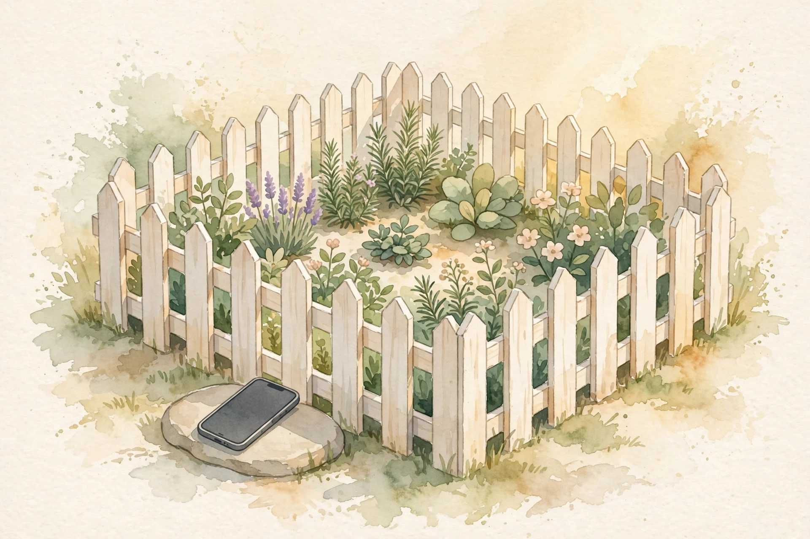

Deep Questions · Companion · 13 min
Digital Minimalism
The philosophy: why detoxes and app fixes failed, the attention arms race, the existential void, and values-first technology choice.
Cal Newport. Photo: robertglazer.com (Elevate Podcast). This episode summarizes his 2019 book Digital Minimalism.
Watch. The official episode video. Use the chapter menu above to jump to any section of this companion as you listen.
The Wisdom Index: every nugget in this companion
Part 1
The Uneasiness
Newport starts with the inspiration for the 2019 book. Around 2016 and 2017 he noticed people growing uneasy about their phones. The complaint was specific: too much time staring at these things, and a bad feeling after each session.
People tried to solve it. Newport argues that the two big responses both failed, and understanding why they failed is the whole book.
Part 2
Two Failed Fixes
Response one was the detox. The idea: I look at this too much, so I will white-knuckle my way off it. No more Instagram, no more TikTok, no more Twitter. See the phone across the room and refuse to grab it. It rarely worked. The phone sat right there. One quick check turned into a long session, and the phone moved back into the center of life.
Response two was the delusion that we could fix the programs. Slightly better content moderation on Twitter. The right habit app, the one that grows a tree on screen the longer you wait. A few tweaks and the phone would stop making us stressed and unhappy. That did not work either. Years of trying, and everyone kept coming back to the phones.
Nugget 1 · The white knuckle
The detox trap
What happened. Source fact People tried pure abstinence from their phones and apps. It rarely held, because the phone stayed within reach and one peek restarted the habit.
Why it matters. Interpretation Willpower loses to proximity. A detox that leaves the trigger in your pocket is a plan to fail politely.
The principle. Interpretation Do not fight the phone where it lives. Change what it means to you first.
Nugget 2 · The tweak
The fix-the-apps delusion
What happened. Source fact People hoped better moderation and clever habit apps would fix the unhappiness. Years of tweaks changed nothing about the underlying pull.
Why it matters. Interpretation Tweaking the tool accepts the tool's terms. The problem was never the settings page.
The principle. Interpretation If the business model is your attention, no update will set you free.
Part 3
The Arms Race
Why did both responses fail? First, the engineering. These apps are too well built to resist by willpower. The interface itself is weaponized: the colors of notification badges, the pull of infinite scroll, the slot-machine refresh that asks if there is a new post to see.
Under the interface sits the algorithmic backbone. Users get reduced to vectors of numbers, processed by complex algorithms and neural networks that learn exactly what to show to earn one more scroll, one more click. Newport calls it an arms race against an incredibly well-funded enemy. Of course we lose.
Nugget 3 · The mismatch
The arms race
What happened. Source fact Newport describes users reduced to vectors of numbers, fed through algorithms and neural networks that optimize for one more scroll, backed by enormous investment.
Why it matters. Interpretation You are not weak. You are outgunned. Framing it as a character flaw keeps you fighting the wrong battle.
The principle. Interpretation Never arm-wrestle an industry. Change the game instead.
You versus the arms race
Source: Deep Questions, Digital Minimalism, the attention-engineering argument. Labels are paraphrase.
Part 4
The Existential Void
The second reason the fixes failed is harder to admit. The phone filled a psychological need. It filled an existential void that people did not want to stare into: regrets, shames, anxieties, parts of life they did not want to acknowledge.
The algorithmically enhanced pacification on the glowing glass distracted just enough to keep those feelings at bay. Taking it away cold turkey, for a detox weekend or through a blocking app, felt terrifying, because the phone filled a real need. So people kept returning, kept feeling uneasy about the time, kept feeling bad after each session: one yelling match too many on Twitter, one more wave of inferiority after a curated Instagram life.
Nugget 4 · The pacifier
The existential void
What happened. Source fact Newport argues the phone pacified people, keeping them from confronting regret, shame, and anxiety, which made cold-turkey removal feel terrifying.
Why it matters. Interpretation A habit that medicates cannot be removed by discipline alone. The underlying ache needs a better answer first.
The principle. Interpretation Ask what the phone does for you before you take it away. Fill the need, then drop the tool.
Part 5
Intention, Not Minimization
The solution, Newport argues, is a philosophy of technology use: a coherent theory of how technology fits into a life well lived. He called it digital minimalism.
The name misleads. It is not minimization. Less is not automatically better. Newport is a computer scientist who loves technology. The philosophy is about intention. Start with a clear vision of the life you want: what you value, how you want to spend your time. Work backwards from that vision to decide which technologies serve it.
For each value, ask the best-use question: what is the best use of technology to support or amplify this thing I care about? Once you know why you use a tool, the fences write themselves. You keep the advantages and dodge the hidden traps.
Nugget 5 · The reframe
Intention, not minimization
What happened. Source fact Newport defines digital minimalism as starting from a vision of the life you want, then choosing technology that supports each value, with clear rules around each tool.
Why it matters. Interpretation Minimization is a diet. Intention is a cuisine. One forbids, the other designs.
The principle. Interpretation Start from the life, not the tools. Every app must audition for a role in your vision.
Part 6
The Cycling Group
His example makes the method concrete. Suppose you value social connection and exercise, and you love cycling. A Facebook group for local riders is a great use of technology: it finds you riding partners on short notice. So Facebook earns a place in your life, for that reason.
Now the fences follow from the why. Why would you also stare at the news feed? Why read your uncle's takes or your niece's politics? Those have nothing to do with cycling. So you install a browser plugin that scrapes the feed off your screen. You log in on your computer, go straight to the group, get exactly what you came for, and leave. It is not on your phone, because you never needed the feed. The technology works for you. You are not a gadget in the attention economy's machinery.

Illustration. Fences from the why: the tool serves the value, and the rules keep the rest out. AI-generated watercolor made for this page.
Nugget 6 · The example
Fences from the why
What happened. Source fact Newport's cycling example: keep Facebook for the local riding group, strip the news feed with a browser plugin, use it on the computer only, never on the phone.
Why it matters. Interpretation Rules stick when they derive from purpose. Orders from nowhere fail. Reasons rooted in your why hold.
The principle. Interpretation For every tool you keep, write its job description. Everything outside the job description gets fenced off.
Part 7
The Right to Miss Out
The corollary is comfort with missing out. A new tool appears. That does not make it your job to try it. Apple may be glad it invented the watch. TikTok may have 600 million users. Newport's answer: let them have their 600 million users. He knows what he is about. His rules evolve slowly.
not my job to figure out what's on there
Cal Newport on TikTok's 600 million users · Deep Questions
The minimalist life he describes is intentional and careful, but also exuberant: focused on building the best possible life, with technology helping on his terms.
Nugget 7 · The corollary
The right to miss out
What happened. Source fact Newport says the digital minimalist must be comfortable ignoring new tools entirely: 600 million TikTok users do not create an obligation to look.
Why it matters. Interpretation FOMO is a tax on the undecided. A clear vision makes "no" the default, which is the only sustainable default.
The principle. Interpretation New does not mean for you. Let the world audition. You hold the casting vote.
Part 8
Chase the Positive
Here is why the philosophy works where detoxes failed. Behavior change aimed at a positive vision is sustainable. When the rules serve a life you deeply want, a craving to check some off-plan service meets a committed answer: no, I am building something better.
Change aimed at avoiding a negative is not. Vowing that you spend too much time on Twitter and will try to stop collapses the moment the brain negotiates: it is not that bad, someone met a useful contact there, let us just take one peek.
Illustration. The positive vision first: a life full enough that the drawer stays closed. AI-generated watercolor made for this page.
Nugget 8 · The direction
Chase the positive
What happened. Source fact Newport argues that rules serving a positive vision of life hold, while rules built on avoiding a negative collapse at the first whispered let us just peek.
Why it matters. Interpretation Restriction without a vision is a vacuum, and vacuums get filled. Aspiration is the only durable fence.
The principle. Interpretation Do not start by banning. Start by building the life that makes the ban unnecessary.
Part 9
The 30-Day Declutter
For readers who do not yet know what they value, the book offers a starting ritual: the 30-day digital declutter. Note the word. Not detox. Declutter. Step away for 30 days from optional personal technologies: social media, online news, streaming video. During that time, aggressively reflect and experiment to rediscover what you care about and how deeper activities feel.
You emerge with self-awareness and a real answer to the question of what to return and how to use it. Newport ran 1,600 people through the process while writing the book, and the lessons filled chapters.
The 30-day declutter
Source: Deep Questions, Digital Minimalism, the 30-day digital declutter and the 1,600-person experiment. Labels are paraphrase.
Nugget 9 · The reset ritual
The 30-day declutter
What happened. Source fact Newport prescribes 30 days away from optional personal technologies, filled with reflection and experiment, so reintroduction happens with a clear why and clear rules. 1,600 people tested it for the book.
Why it matters. Interpretation You cannot redesign a relationship you have never stepped outside of. Distance first, decisions second.
The principle. Interpretation Remove everything optional for a month. What you genuinely miss earns its way back, on your terms.
Part 10
On Your Terms
Newport closes with the stance that sums up the philosophy. He is not interested in clocking into Mark Zuckerberg's data factory. He does not see it as his job to give Elon Musk a better network graph to monetize with ads. He wants the best life possible, with technology helping on his terms.
clocking into mark zuckerberg's data factory
Cal Newport on what he refuses · Deep Questions
If you feel uneasy about your relationship with your tools, he says, this is an idea worth considering.
The episode in seven lines
- Detoxes fail and app tweaks fail. Both leave the real machinery untouched.
- You face an arms race: engineered interfaces, learning algorithms, enormous funding.
- The phone medicates an existential void. Name the need before you remove the tool.
- Digital minimalism is intention, not minimization. Start from the life you want.
- Every kept tool gets a job description and fences. The why writes the rules.
- You may miss out on everything else. New does not mean for you.
- Chase a positive vision, then declutter for 30 days and rebuild with intention.
Distilled from Deep Questions, Digital Minimalism with Cal Newport (May 2022, 12:53). Video: youtube.com/watch?v=DsGKzjyj_6Q.